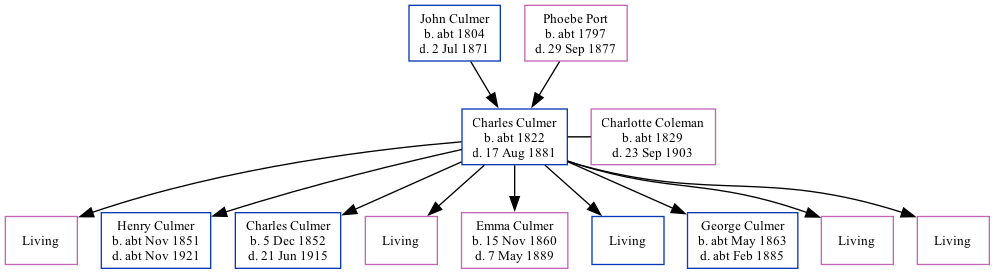

Charles Culmer c1822 - 1881
[ Home ] | [ Calendar ] | [ Surnames Index ] | [ Family History ]A farm waggoner and the child of John Culmer (an agricultural laborer) and Phoebe Port, Charles Culmer, the great-great-grandfather of <a href="I1.html">Nigel Horne</a>, was born in Hoath, Kent, England <i>c.</i> 1822<span class="citation">1,2,3,4,5,6</span>, was baptized there on Dec 29, 1822 and married Charlotte Coleman (a pauper with whom he had 9 children: <a href="I92.html">Ann</a>, <a href="I91.html">Henry</a>, <a href="I94.html">Charles</a>, <a href="I93.html">Elizabeth</a>, <a href="I21.html">Emma</a>, <a href="I95.html">John</a>, <a href="I99.html">George</a>, <a href="I96.html">Jane</a> and <a href="I90.html">Frances</a>, along with 5 surviving children) in St Nicholas-at-Wade, Kent, England on May 21, 1850<span class="citation">7</span> (St. Nicholas At Wade, Kent, England).</p><p>Charles spent all of his life in Kent, England. Throughout his life, he lived in several places around the county: in St Nicholas-at-Wade in 1841<span class="citation">1</span>; at Row, Monkton on Mar 30, 1851<span class="citation">8</span>; on Monkton Street, Monkton on Apr 7, 1861<span class="citation">3</span>; and at The Street in St Nicholas-at-Wade on Apr 2, 1871<span class="citation">9</span> and on Apr 3, 1881<span class="citation">5</span>. <p>He died on Aug 17, 1881 on Kent and Canterbury Hospital, Ethelbert Road, Canterbury, Kent<span class="citation">6</span> (pleurisy) (pleurisy) and was buried in St Nicholas-at-Wade on Aug 21, 1881.
Parents
- John was born c. 1804
- Phoebe was born c. 1797
Children
- Henry was born c. Nov 1851
- Charles was born on Dec 5, 1852
- Emma was born on Nov 15, 1860
- George was born c. May 1863
Citations
- 1841 England Census Online publication - Provo, UT, USA: The Generations Network, Inc., 2006.Original data - Census Returns of England and Wales, 1841. Kew, Surrey, England: The National Archives of the UK (TNA): Public Record Office (PRO), 1841. Data imaged from the National
- 1851 England Census Online publication - Provo, UT, USA: The Generations Network, Inc., 2005.Original data - Census Returns of England and Wales, 1851. Kew, Surrey, England: The National Archives of the UK (TNA): Public Record Office (PRO), 1851. Data imaged from the National
- 1861 England Census Online publication - Provo, UT, USA: The Generations Network, Inc., 2005.Original data - Census Returns of England and Wales, 1861. Kew, Surrey, England: The National Archives of the UK (TNA): Public Record Office (PRO), 1861. Data imaged from the National
- 1871 England Census Online publication - Provo, UT, USA: The Generations Network, Inc., 2004.Original data - Census Returns of England and Wales, 1871. Kew, Surrey, England: The National Archives of the UK (TNA): Public Record Office (PRO), 1871. Data imaged from the National
- 1881 England Census Online publication - Provo, UT, USA: The Generations Network, Inc., 2004. 1881 British Isles Census Index provided by The Church of Jesus Christ of Latter-day Saints © Copyright 1999 Intellectual Reserve, Inc. All rights reserved. All use is subject to the
- England & Wales, FreeBMD Death Index: 1837-1915 Online publication - Provo, UT, USA: The Generations Network, Inc., 2006.Original data - General Register Office. England and Wales Civil Registration Indexes. London, England: General Register Office. © Crown copyright. Published by permission of the Cont
- England & Wales, FreeBMD Marriage Index: 1837-1915 Online publication - Provo, UT, USA: The Generations Network, Inc., 2006.Original data - General Register Office. England and Wales Civil Registration Indexes. London, England: General Register Office. © Crown copyright. Published by permission of the Cont
- 1851 England, Wales & Scotland Census - Findmypast (was age 28 and the head of the household)
- 1871 England, Wales & Scotland Census - Findmypast (was age 48 and the head of the household)
Notes
worldconnect.rootsweb.com.
Media
Charles Culmer - Charlotte Coleman - marriage certificate

Charles Culmer - death certificate
Whitstable Times and Herne Bay Herald - 27 Aug 1881
Canterbury Marriages - GBPRS/CANT/M/97245491/1
England & Wales marriages 1837-2008 - BMD/M/1850/2/AJ/000450/034
England & Wales deaths 1837-2007 - BMD/D/1881/3/AZ/000069/330
1871 England, Wales & Scotland Census - GBC/1871/0014272132
1851 England, Wales & Scotland Census - GBC/1851/0005872969
Family Tree
Generated by Ged2Site. Last updated on Jul 20, 2025